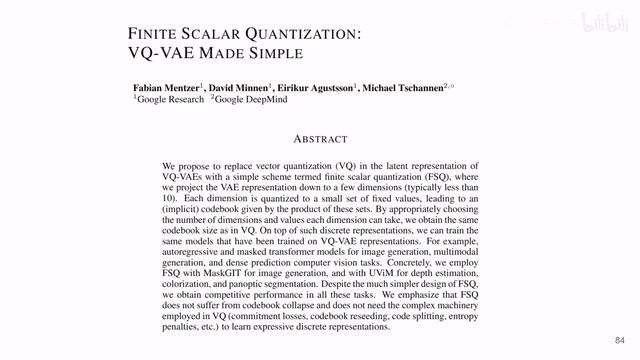
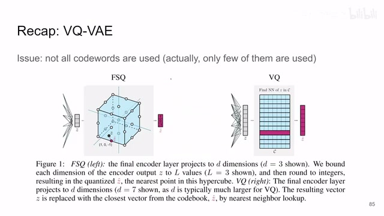
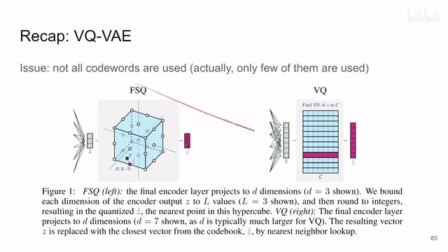
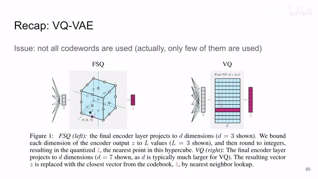
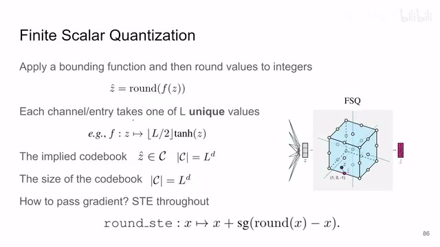
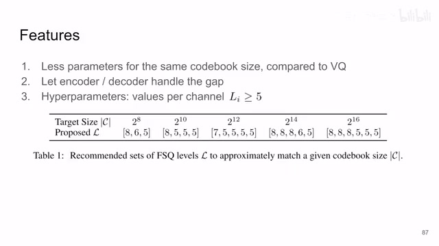
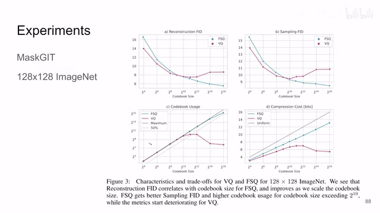
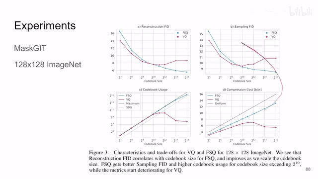
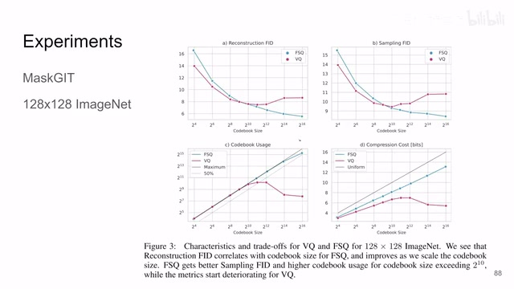
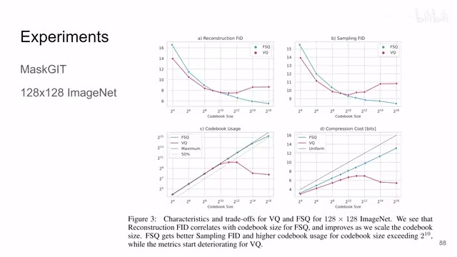

← 返回阅读库 · 原论文目录
论文讲解阅读文档 · 表征学习 · v193
Finite Scalar Quantization VQ-VAE Made Simple[2309.15505]
视频时长 00:05:25；讲解文字 2,257 字符；提取讲解画面 10 张。按视频原顺序阅读，每段文字保留时间戳。
文字来自整段视频的自动语音转写，按自然停顿分段，并与 PPT / 论文页面 / 演示画面对齐。未将讲解压缩为摘要；术语、数字和口述公式请结合画面及原论文核对。 阅读稿已校正规范部分明确术语误识别；原始逐字稿和每处修改记录另行保留。
讲解画面为源视频截图（640×360），不是可编辑 PPT 文件。全片按每秒 2 帧扫描内容变化，逐步展开页保留；连续动画保留代表画面。清晰度受源视频限制。
下载完整资料包 · 含离线 HTML、PDF、Word、全部 PPT 画面和字幕。
原论文与材料
Finite Scalar Quantization: VQ-VAE Made Simple · 下载完整 PDF（16 页）
按时间阅读
00:00:00–00:00:12 · 画面 001

00:00:00–00:00:12 · 画面 001大家好啊今天我们来快速说一篇论文啊这个 Finite Scalar Quantization: VQ-VAE Made Simple我们不用很累很麻烦就能够获得一个好的 VQVAE，那么我们首先快速的回顾一下这个 VQVAE，那么 VQVAE 相对于传统的 VAE，就是我中间 bottleneck 出来的那个东西，它不是一串的高斯 distribution，而是像这样一个一个的 vector，这些 vector 组合在一起就是组合成一个 codebook，那么相对于连续的 distributionvector 的数量是有限的。
00:00:12–00:01:14 · 画面 002

00:00:12–00:01:14 · 画面 002你的图像过完一个 encoder 之后得到这个大的 tensor，你从空间尺度上来看，每一个像素的位置它都是一个 vector，那么这个 vector 你就在这个码表里面，你去找它的最近邻，找出来之后呢，然后你的 decoder 呢是在这个最近邻上做重建。所以你这样编码之后，每张图你并不用存储说这些具体的 tensor 的值是多少，这些 vector 的值是多少，你只需要记住它在这个 pixel 上它对应的是这个 codebook 里面的第几号的这个 vector，那么这个呢是 vqvae，之前我们也有视频详细的讲过了。
但是 VQ 这个东西它存在一个问题，很大的一个问题就是，并不是所有的这些 vector 就是你 codebook 虽然很大，但是并不是所有的 vector 都被使用了，那么之前我们也有视频介绍过，通过加入额外的辅助的 loss 去改善利用率低的问题，但是本文通过非常直接的方法，不依赖于额外的 loss 就给它解决了。
00:01:14–00:01:15 · 画面 003

00:01:14–00:01:15 · 画面 00300:01:15–00:03:04 · 画面 004

00:01:15–00:03:04 · 画面 004那么我们来看作者的设计啊，那么这里最核心的思路是我们现在把这样产生的一个 vector 看成一系列点的坐标，比如说第一个值是 x 的坐标，第二个值是 y 的坐标，第三个值是 z 的坐标，那么你想这三个轴就能定义一个空间，你通过改变这三个坐标就能在这个空间里面游走，那这个时候空间还是无限大的，那在本文中呢限定了说，你的每一个坐标里面的这个值它必须是离散的。
同时它的数量是有限的，你看到这个例子里面它就只限制了一个轴上只允许取三个值 1 0 或者-1，那么这样子呢你的空间中实际上只有 3 的三次方也就是 27 个点可以用。那么这样子呢空间中的一个点就相当于原来的 VQ 的一个 vector 这个呢就是本文的设计你在实际训练的时候呢就可以把原来的 VQ 换成这个 FSQ 就直接就这样做就好了那你看到这两个方法最显著的区别就是那么 VQ 呢是需要你把每一个 vector 代表的数值显示的存在我们的这个码表里面但是本文的这个 FSQ 呢你这个码表它就是一个坐标
至于这个坐标它具体代表什么值，那么这些值全部都被隐式的编码在了你的 encoder 和 decoder 里面，就是 encoder decoder 沟通好了我们去哪个地方接头，你像这个 VQ 你能在这个码表里面显示的看到他们接头的内容，但是对于 FSQ 来讲你只知道他们接头的坐标，但它具体交流的什么内容你就完全不知道了，这是它跟 VQ 最本质的区别，我们来看一看它的一些具体的实现。
00:03:04–00:04:08 · 画面 005

00:03:04–00:04:08 · 画面 005就是我需要有一个 bounding function，就是定义一个你的每个坐标的范围，然后在这个范围里面你确定好你这个范围是要被极等分的，那么你进来一个连续的值之后把它靠近到离它最近的整数上就可以了，那么这个 L 就是你这一个轴上有多少不同的值，你像这里这种情况就是 10-1 一共有三个值。你看到这里它先用这个 tanh 把这个 z 限制到从-1 到 1 这个区间，然后呢你再把它靠近到相应的整数上就可以了，那么最终你的码表呢就是这个样子，假如说你进来的 vector 有第一个 channel，每一个 channel 它有这个 l 个整数的值来编码，那你码表的尺寸对吧就是 l 的第四方，这个都是很直接的，那同样的跟 vq 一样，你在训练的时候怎么样把梯度传递过这个取整这个操作呢。
我们就是做这样一个近似,跟 VQ 一样,负值上虽然还是梯度值取出来的是 RoundX,但是你的梯度还是通过这里直接传递下去了。那么相比于 VQ,codebook 尺寸相同的情况下,本文的方法需要的参数更少。同时我们也之前说了,把所有的编码的压力给回到 Encoder 和 Decoder,我们 VQ 的部分它只是一个坐标的关系。
00:04:08–00:04:31 · 画面 006

00:04:08–00:04:31 · 画面 006那么至于具体的码表有多大对吧，这里作者给出了一般的经验就是每个轴大于五个值就可以了，那么来看到实验结果，这里只是一个 toy experiments，如果你感兴趣呢，你可以去原文中看它更详细的更复杂的一些实验，那么这里我们就看到对吧，这个曲线横轴是这个 codebook 的尺寸，纵轴是我们各种的指标，那你像传统的 VQ 随着你的码表的尺寸的增大它图像重建的质量就开始下降了。
00:04:31–00:04:59 · 画面 007

00:04:31–00:04:59 · 画面 007对吧？生成的质量开始下降了，同时呢，你的这个码表的使用率大幅的降低。而本文的方法呢，各种趋势呢，都是保持的比较好的。那么总的来说，本文通过一个非常简单的更改达到这样的效果，还是很有意思的。那么这就让我不得不想到，你像 model based reinforcement learning 里面，这个 dreamer v2，它就是用 one-hot encoding 来做的这个图像的编码。
00:04:59–00:05:00 · 画面 008

00:04:59–00:05:00 · 画面 00800:05:00–00:05:25 · 画面 009

00:05:00–00:05:25 · 画面 009他在思想上其实跟本文的方法是非常靠近的。好的，那么以上就是我对这个文章的一个非常快速的梳理。那么感谢您的收看，再见。
00:05:25–00:05:25 · 画面 010

00:05:25–00:05:25 · 画面 010转写与来源说明 · 0 个自动复核提示
保留 15 个原始语音片段，0 个片段触发自动复核提示。提示仅用于定位可能的术语、重复或识别问题，不等于已确认错误。
讲解画面为源视频截图（640×360），不是可编辑 PPT 文件。全片按每秒 2 帧扫描内容变化，逐步展开页保留；连续动画保留代表画面。清晰度受源视频限制。
原视频：paper/合集_2026-10-16_表征学习/[论文速览]Finite Scalar Quantization VQ-VAE Made Simple[2309.15505].mp4
SHA-256：66b9ded5e4522da0f30565dafaeb60c16963d5825e462c98a86f325e2ba4af84
全文按视频语音与画面制作。原论文可从上方链接下载；完整资料包保留全文、原始逐字稿、字幕和校对记录。